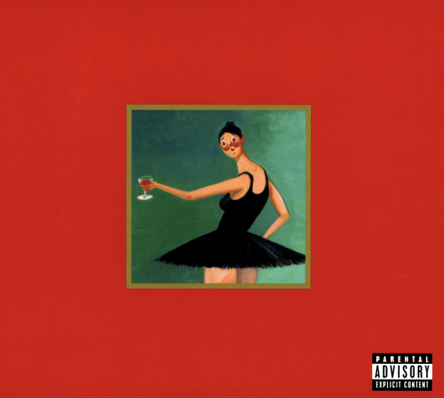
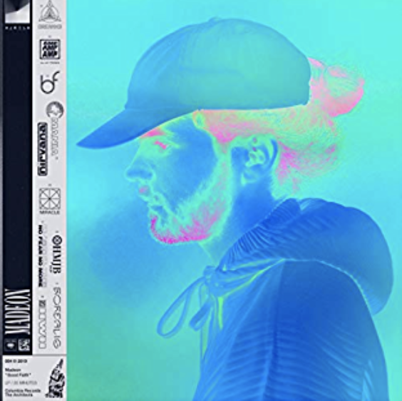
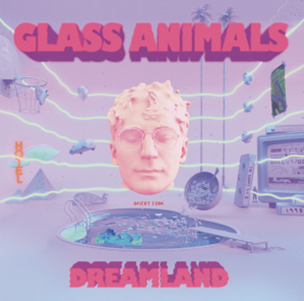

My Favorite Music Albums
My Beautiful Dark Twisted Fantasy - Kanye

This is my most played album. Kanye explores his internal struggle in his rise to success and his downfall. He takes listeners on a sensory experience of his life - outlining the pain, grandeur of fame, and self-doubt.
BTW - click this to access a cool website based on how closely linked musical artists are to Kanye West BTW - click here for cool videos of fanmade Kanye remixes and more playlists!Good Faith - Madeon

Madeon is a French DJ and record producer. He explores themes of human love, questioning own self/emotions, relationship to reality, and validity of human emotion.
Dreamland - Glass Animals

This is the third album made by English group, Glass Animals. The album is a tribute to the human experience of loving, living, and feeling through the good and bad. It paints pictures of memories that make a person unique.